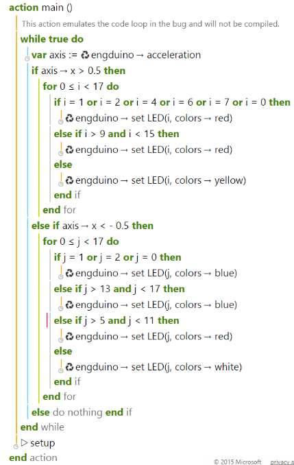

Mini Games
World Cup Flags
Who doesn't love the world cup? In this mini quiz, we are going to combine all of the Engduino exercises before (Accelerometer, LEDs, loops, etc) to make an awesome Engduino world cup flags display. Let's four of your favorite countries and display their country flag into our Engduino pad LEDs. Let's say these are your favorite teams from world cup: Spain, France, Italy and England.

To display four of the flags, let's set up Spain flag when we're tilting to the left, Italy to the top, France to the right and England to the bottom.
Setting Up The LEDs
The First step is to set up the LEDs for all four countries. Let's take Spain flag as the example. In order to make a Spanish flag, we need two different LEDs colors which is yellow at the middle and two arrays of reds at the top and bottom. In this case, we are going to take Engduino green pad as the example (since every Engduino pads has different numbering system).
Let's set up LEDs number 1,2,4,6,7 and 0 and LEDs number 9 to 15 using if condition into red lighting and the rest to yellow. Maybe some of you are wondering, why can't we use for loop in this case. In other language, indeed we can use for loop to set up LEDs from 9 to 15 but since TouchDevelop can only support loop that starts from 0, we have to use if condition as the substitute. Let's take a look at the real code:
As you can see, we can use if condition to make the code more simple than writing it one by one. As we expected, this is the display of the Engduino on the emulator:
Combining The LEDs and Accelerometer
Now, the second step is when you tilt the Engduino to the right, it shows the Spanish flag, and leave the rest to black. The way to do it is very simple, just wrap all of our code that we just made with if statement.
When you are testing it to the Engduino, you can see that the flag only shows up when we tilt the pad to the right and when it's down to any other direction, all of the LEDs are off.
Multiple Flags!
So, how about adding another flags to the pad?
We're going to visit our old pal else if in this one. Let's say we want to add the French flag when we want to tilt to the left. At the end of our previous code, instead of just closing it with else, we can add else if to input our French flag code. Here's how it goes
As you can see, this code contains two different flag tilts, here's the final result on the emulator:
Quick Exercises
- Now you can finish up all the four sides with the rest of the flag by using all the statements mentioned before!
- Add the button function so that the lights only emit when the button is pressed